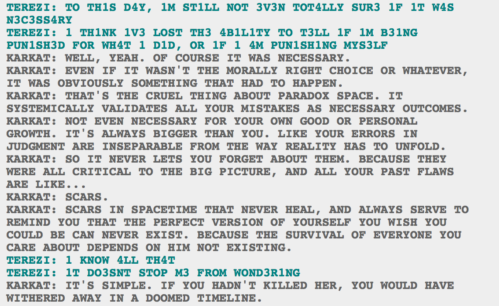

See? That’s really fucking awesome. That is some top notch scifi writing. You do not see good time travel stuff written often.
And yet, capslock and Terezi’s quirk. I feel like I’m being pranked because it’s so awesome, but unless you’re talking to another Homestuck fan, how are you going to be like, “Look at how this deals with the problem of free will when you can actually see the ramifications of your choices and possibly even meet versions of yourself that made the ‘wrong’ choice. Terezi isn’t just dealing with the choice that she made, she is dealing with knowing exactly what would have happened if she hadn’t made that choice, and yet still 'W0ND3R1NG’ if it could have turned out differently, and if perhaps making the wrong choice and dooming yourself isn’t the right choice when the right choice means you did something that will haunt you”? That’s really fucking cool but Terezi still says she’s W0ND3R1NG and if you’re not in the fandom that’s going to look absolutely ridiculous.